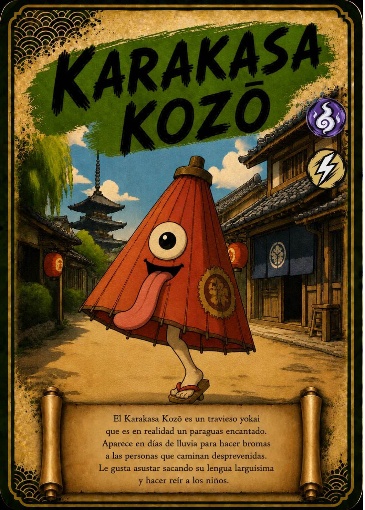

↗ Tocá la carta para verla en grande
EL ÁLBUM TAIKARDS · CARTA 15 / 48
KARAKASA KOZŌ
El paraguas saltarín
- Naturaleza / elemento
- 👻 Espíritu
- Tipo
- ⚡ Velocidad
📖 Te cuento mi historia
Un paraguas viejo se sacude, abre un ojo y empieza a saltar sobre una sola pierna. Karakasa Kozō es una de esas criaturas que convierten un objeto cotidiano en algo extraordinario. En los días de lluvia de TAIKARDS aparece con su larguísima lengua y sus bromas. Donde otros solo ven charcos, él encuentra el escenario perfecto para una tarde de juegos.
Versión infantil basada en la carta de TAIKARDS. Sus personajes y aventuras pueden ser diferentes de las leyendas tradicionales. La naturaleza y el tipo corresponden a la clasificación del juego.
← Volver a todas las cartas